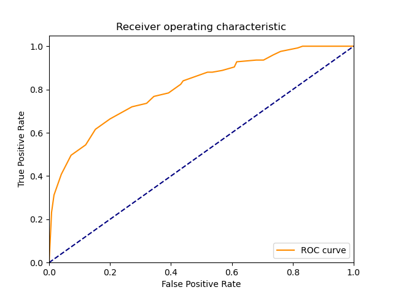
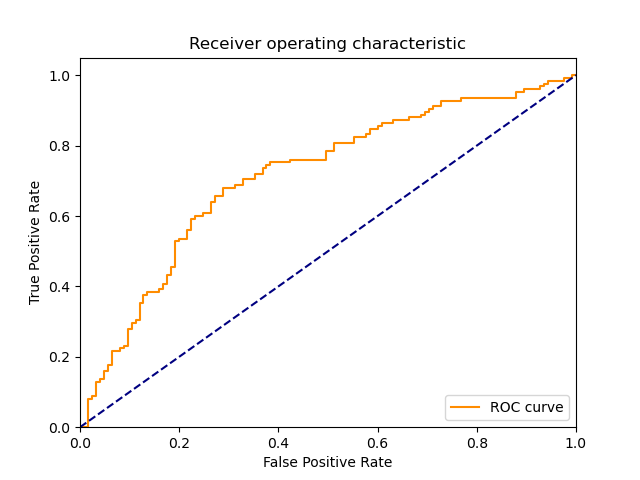
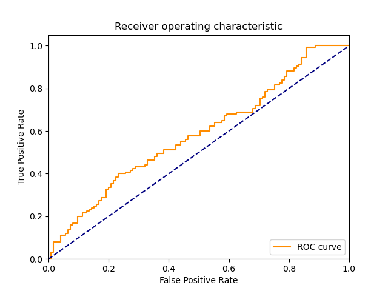

| 6 |
NonLinearSVM |
Non Linear Support Vector Classification |
0.015668 |
0.015543 |
116 |
68 |
57 |
9 |
0.928 |
0.544 |
0.670520 |
0.736 |
0.264 |
0.778523 |
1.055902 |
49.688272 |
50.088419 |
 |
 |
|
| 9 |
AdaBoostClassifier |
An AdaBoost classifier |
5.046666 |
0.281430 |
103 |
76 |
49 |
22 |
0.824 |
0.608 |
0.677632 |
0.716 |
0.284 |
0.743682 |
1.006517 |
0.147361 |
2.642515 |
|
|
|
| 7 |
LP |
Linear perceptron classifier |
0.000000 |
0.000000 |
108 |
65 |
60 |
17 |
0.864 |
0.520 |
0.642857 |
0.692 |
0.308 |
0.737201 |
0.965162 |
inf |
inf |
 |
 |
 |
| 1 |
RealBoost |
An RealBoost classifier |
14.203512 |
0.015667 |
99 |
72 |
53 |
26 |
0.792 |
0.576 |
0.651316 |
0.684 |
0.316 |
0.714801 |
0.944188 |
0.050326 |
45.624071 |
|
|
|
| 8 |
MLP |
Multi-layer Perceptron classifier. |
0.874865 |
0.000000 |
90 |
82 |
43 |
35 |
0.720 |
0.656 |
0.676692 |
0.688 |
0.312 |
0.697674 |
0.943419 |
0.797465 |
inf |
|
|
 |
| 4 |
KNeighborsClassifier |
Classifier implementing the k-nearest neighbors vote |
0.000000 |
0.020502 |
110 |
58 |
67 |
15 |
0.880 |
0.464 |
0.621469 |
0.672 |
0.328 |
0.728477 |
0.932863 |
inf |
35.531418 |
 |
|
 |
| 5 |
LinearSVM |
Linear Support Vector Classification |
0.056398 |
0.000000 |
88 |
82 |
43 |
37 |
0.704 |
0.656 |
0.671756 |
0.680 |
0.320 |
0.687500 |
0.927426 |
12.190167 |
inf |
|
|
 |
| 2 |
BernoulliNBC |
Naive Bayes classifier for multivariate Bernoulli models |
0.003939 |
0.000000 |
110 |
51 |
74 |
15 |
0.880 |
0.408 |
0.597826 |
0.644 |
0.356 |
0.711974 |
0.889869 |
180.753941 |
inf |
 |
 |
 |
| 3 |
GaussianNBC |
Gaussian Naive Bayes (GaussianNB) |
0.003904 |
0.000000 |
102 |
31 |
94 |
23 |
0.816 |
0.248 |
0.520408 |
0.532 |
0.468 |
0.635514 |
0.743073 |
162.771067 |
inf |
 |
|
 |
| 0 |
DiscreteNBC |
DiscreteNBC |
0.031247 |
0.031248 |
61 |
54 |
71 |
64 |
0.488 |
0.432 |
0.462121 |
0.460 |
0.540 |
0.474708 |
0.606751 |
15.192052 |
15.191821 |
 |
 |
 |
{kind=link}
{kind=link}
{kind=link}
{kind=link}
{kind=link}
{kind=link}
{kind=link}
{kind=link}
{kind=link}
{kind=link}
{kind=link}
{kind=link}
{kind=link}
{kind=link}
{kind=link}
{kind=link}